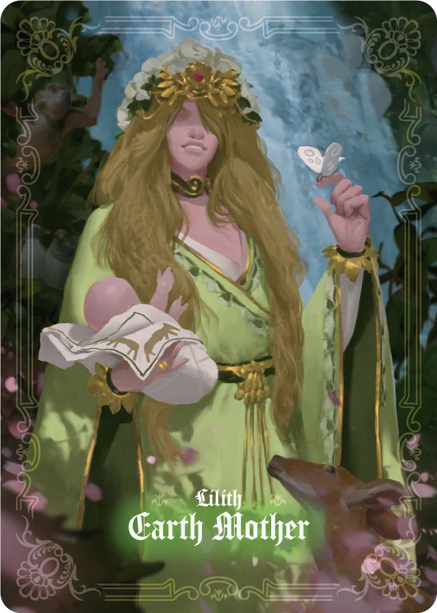

Overview
Some things must be done. Some hopes must be fought for.
Lilith, Book 2, chapter 1121
Lilith was once an Ancient Goddess of the Moon Pathway, known as the Sanguine Ancestor Lilith, and was believed to have perished during the Second Epoch.
Honorific Name
After World War
The Source of Life; The Mother of All Things; The Propagation of the Fertile Land; The Symbol of the Crimson Moon and Reproduction; The Destination and the Starting Point of Everything (生命的源泉， 万物的母亲， 托起丰饶的大地， 红月和繁衍的象征， 一切的归宿、一切的起点)
Before World War
The Source of Life; The Mother of All Things; The Ultimate Destination; The Propagation of the Fertile Land; The Symbol of Fertility and Reproduction (生命的源泉， 万物的母亲， 最终的归宿， 托起丰饶的大地， 生育和繁衍的象征)
Sacred Emblem
Sacred Emblem is the symbol of the Gods which worshiped and glorified by people in the Fifth Epoch.
The symbol of the Earth Mother is the Sacred Emblem of Life. Its represented by a baby surrounded by the symbols of wheat, flowers, and spring water.3Book 1, chapter 261 This Sacred Emblem is used by "Her" Church as its symbol.
Appearance
Sanguine Ancestor
Lilith was the most beautiful deity when "She" was one of the Ancient Gods.
Back then, "She" was the most beautiful woman, the most beautiful creature, and the most beautiful deity in the entire world and universe.
Book 2, chapter 1150
However, although regarded as the Embodiment of Beauty, "She" also had a disgusting and ferocious side.
"For instance, 'She' would manifest into a mountain range of flesh. On top of it grew all kinds of reproductive organs as they spewed out thick black fog while constantly producing all sorts of strange creatures. All powerhouses who approached 'Her' would be overwhelmed by the desire to mate and reproduce, becoming a walking organ."
Book 1, chapter 514
Earth Mother
In Third Epoch: Sitting on the table side with Tolzna, Salinger, and Badheil, is a supple, beautiful, and dignified lady.4Book 1, chapter 1117
- Discovered in the Giant King's Court in the Rose Redemption mural.
In Fourth Epoch: "She" appears as a plump and beautiful lady, with ears of wheat growing from "Her" feet, and "She" is surrounded by spring water. "Her" dress seems to flutter, and embedded in it, there are different herbs and flowers, as well as the depiction of different animals. "She" appears tall and sacred. In "Her" arms is an adorable infant in swaddling clothes.3 The Earth Mother statue hugged a baby.16
- Discovered in the Tudor-Trunsoest Underground Ruins.
In Fifth Epoch: A figure twined by deep green vines and adorned with various herbs and flowers appeared. "She" was as huge as a mountain and had a voluptuous figure. "Her" dress fluttered as "She" carried an illusory baby.17
- During the 1350 World War.
"She" had a voluptuous and graceful figure, radiating maternal warmth.5 "She" had dark brown hair.18
- After The Day of Many Disasters.
Twisted Version: A supple and beautiful woman. "Her" chest bulged, propping "Her" clothes up. In "Her" arms was face-rotting baby, and at "Her" feet were black ears of wheat, spring water squirming with flesh, herbs dripping with pus, and wildly-mating animals.6Book 1, chapter 455
- Discovered in the Forsaken Land of the Gods in the True Creator's Temple mural.
Pathway Composition as an Ancient God
"Her" Pathway composition is as follows:19
- Moon: Uniqueness + 1 Sequence 1.
- Mother: 1 Sequence 1.
- Demoness: Uniqueness (Controlled) + 1 Sequence 1.
In addition, "She" also accommodated a Sequence 2 characteristic of the Demoness, later known as Lilith's Hair and was preserved for a long time without being used after "Her" death.7Author's WeChat post fate_formulas, part 54
Even though "She" didn't have support from all 3 Sequence 1 Beauty Goddess, the reason why "She" didn't retrieve the Beauty Goddess characteristics is because "She" was afraid of deepening the Mother Goddess of Depravity's influence. Furthermore, after replacing Omebella, "She" didn't want to expose the identity of Lilith. And giving the characteristics to the Sanguines was equivalent to keeping them under "Her" control.20
Among the Ancient Gods, "She" had relatively less madness because of several reasons:
- Beyonders of the Mother and Moon Pathways didn't need to worry about the awakening of the Original Creator in their bodies because their Beyonder Characteristics didn't directly come from "Him", but from the Mother Goddess of Depravity.8Book 1, chapter 1353
- Back in the Second Epoch, the Astral Barrier was still sufficiently sturdy, separating the Mother Goddess of Depravity from Earth, making it difficult for "Her" to exert too much of an influence on the situation inside.8
- Even though the Demoness Pathway doesn't neighbor the Mother and Moon Pathways, the Original Creator's feminine aspect and the universe' feminine aspect are, to some extent, equivalent, leading to convergence without causing excessive madness.7
- The will and spirit of the Malevolent Dragon—the Original Creator's persona presiding over the Demoness Pathway—had already been shattered by the Primordial God Almighty.7
History
Pre-Epoch
Lilith (Former Name Unknown) was a human who survived the Earth Cataclysm2 because of luck.21 She was most likely of European descent.22 She was born as a woman.23
Second Epoch
"She" was one of the eight Ancient Gods in the Second Epoch, the Sanguines Ancestor Lilith. The Sanguines regard the Sanguine Ancestor Lilith as their ancestor and God. One of "Her" symbols is a pair of huge bat wings that covered half of the crimson moon.9Book 1, chapter 1166
During the Early Era of Fire, the quasi-humans races fought against the non-humans races, devils and demonic wolves. The Sanguine Ancestor Lilith, the Giant King Aurmir, and the Elf King Soniathrym were on one side, fighting against the Dragon of Imagination Ankewelt, the Phoenix Ancestor Gregrace, the Mutated King Kvastir on the other side, while the Devil Monarch Farbauti and the Annihilation Demonic Wolf Flegrea were independent beings who wanted to subvert all order and corrupt all living beings.24
At some point after the Ancient Sun God woke up, "He" started cooperating with the Goddess of Misfortune Amanises and the Sanguine Ancestor Lilith.25
At the end of the Early Era of Fire, the Sanguine Ancestor Lilith, Annihilation Demonic Wolf Flegrea, and Mutated King Kvastir perished together in a conspiracy10Author's WeChat post history that was part of the Ancient Sun God's plan.26 However, "She" didn't completely perish.
- When "She" self-detonated, "She" also dragged "Her" Mirror Person along to achieve the ultimate goal of trading "Herself" for the other two Ancient Gods.27
After Lilith's fall, the the Uniqueness of Moon was stolen and eventually passed into the hands of the Evernight Goddess. The Beauty Goddess Characteristic was retrieved by the Sanguines and became a sacred object. At that time, the First Blasphemy Slate was not yet known to the world, and the Sanguines did not dare let their Sanguine Dukes ascend recklessly. Auernia also did not dare to risk it.11Author's WeChat post beauty_goddess
- By having the Evernight Goddess help "Her" safeguard the the Uniqueness of Moon, Lilith could better resist the Mother Goddess of Depravity's influence to some extent.28
- Afterwards, the Evernight Goddess used the the Uniqueness of Moon to satisfy the Darkness.29
Later, the Evernight Goddess collaborated with the Ancient Sun God to help Lilith pretend to be Omebella using "Her" Authority over Concealment, while the Ancient Sun God used "His" Authority of the Error Pathway to help Lilith steal the fate of the Giant Queen.30 After switching to Omebella's identity, Lilith did not immediately advance to Mother until Badheil lived up to "Her" expectations and became the God of Combat to satisfy the Mother.31 The reason "She" didn't just consume the Beyonder Characteristics directly was because the Ancient Sun God persuaded "Her" to wait for the ritual.32
At some point, "She" helped the Ancient Sun God catalyze the activation of the the Uniqueness of Error using "Her" Mother Authority, leading to Amon's birth at the beginning of the Third Epoch.33
Only the Forsaken Land of the Gods still remembers about the Sanguine Ancestor Lilith. "She" controlled the crimson moon and could make the Blood Moon appear any time "She" wanted.9
Third Epoch
According to the Orthodox Churches' myth, the Earth Mother appeared in the Third Epoch and helped humanity through the Cataclysm, along with the Eternal Blazing Sun, the Lord of Storms, the God of Knowledge and Wisdom, the Evernight Goddess, and the God of Combat.34
The true history is that, during the Third Epoch, the three True Gods - Evernight Goddess, God of Combat, and Earth Mother - gradually stepped onto the world's stage. These three formed alliances with each other, going against "The Omniscient and Omnipotent". Since the power gap between "Them" and "The Omniscient and Omnipotent" was still relatively large, the three of "Them" nearly perished on multiple occasions. However, just as "The Omniscient and Omnipotent" and "His" faction were about to win completely, "He" began to have problems with the revival of the Primordial God Almighty inside "Himself".10 Later, the Earth Mother joined Rose Redemption as a member of the Subsidiary Gods faction under the Evernight Goddess, which eventually caused Ancient Sun God's death.4
Fourth Epoch
Due to the fall of the Ancient Sun God, Sequence 0 became critically important, and correspondingly, the status of Kings of Angels was elevated. With the spread of potion formulas from the Second Blasphemy Slate, Auernia used Lilith's Beauty Goddess Characteristic to concoct a potion, completed the ritual, and became a Sequence 1 King of Angels with 2 Sequence 1 Beyonder Characteristics. As a result, "Her" condition greatly improved.11
After the Warring Era which lasted 112 years, Solomon became the Black Emperor with the help of the True Creator. By this time, all deities had "Their" own countries in poorer places, and acknowledged the Black Emperor's rule over the Northern Continent in order to fight against the opposing factions, preventing "Them" from forming a stable alliance to fight against the True Creator. At this time, the Earth Mother's attitude was vague and unclear, but "She" was more inclined towards the God of Combat.35 Later on, the Six Gods reached a common agreement to fight against the True Creator's faction, which led to the fall of the Black Emperor and the first Solomon Empire. Afterwards, the Six Gods supported the Tudor-Trunsoest United Empire that ruled the Northern Continent. When the Black Emperor was about to resurrect, the Six Gods chose Trunsoest over Alista Tudor to ascend to Justiciar, becoming the Night Emperor. With the help of Amon and Adam, Alista Tudor became the Red Priest, becoming the Blood Emperor. The Tudor-Trunsoest United Empire fractured.
During the War of the Four Emperors, Auernia fell. Lilith, fearing the exposure of "Her" identity and latent corruption, chose to seize Auernia's original Beauty Goddess Characteristic. Meanwhile, the Beauty Goddess Characteristic reclaimed by the Sanguines—bearing Lilith's spiritual imprint and remnants of Auernia's consciousness—once again became the Sealed Artifact Shadow of the Beauty Goddess, which was later stolen by the Rose School of Thought and used to fabricate the public identity of the Primordial Moon.11
At some point, "She" helped the Devil Monarch Farbauti partitioned "His" Naboredisley's soul and established a cycle of rebirth, growth, aging, death, and rebirth again to resist corruption from the main body on Hanth Island.36 37 This was done to prevent further influence from the Mother Tree of Desire.38
During the Conflicts of the Seven Gods - the period of over 100 years after the War of the Four Emperors - the Seven Gods fractured and supported different Angel Families of the Trunsoest Empire to form "Their" own country.39 The Earth Mother and the God of Knowledge and Wisdom supported the Castiya Family to establish the Feynapotter Kingdom.10
The Eternal Blazing Sun allied with the God of Combat (Feysac Empire and Intis Kingdom); the Lord of Storms allied with the Evernight Goddess and the God of Craftsmanship (Loen Kingdom); the Earth Mother allied with the God of Knowledge and Wisdom (former Feynapotter Kingdom). They began to fight one another for the next 167 years.10
In the Pale Era, when Death went mad and caused havoc on the Northern Continent with the Primordial Demoness40, the Seven Gods were defeated and retreated at every turn. Eventually, "They" finally took the time to sit down once again and decided to join hands again. After a carefully schemed war with cataclysmic consequences, Death fell, and the Primordial Demoness was severely wounded.41 All Seven Gods were also heavily injured. More and more cracks started appearing on the Earth's Astral Barrier, forcing the Seven Gods to move their Divine Kingdoms to the Astral World to mend the cracks.42 Now, the Seven Gods were unable to leave, and could only send avatars to descend onto reality.10
Fifth Epoch
The Earth Mother's old Divine Kingdom on Earth later became the headquarters of the Church of the Earth Mother.43
After the Battle of the Violated Oath, the Earth Mother became the only religion of Feynapotter.
The Earth Mother likes the giants, and even amongst "Her" Blessed, they are Feysacians.44
"She" decided to bet on Klein early on by showing a revelation to Nibbs Odora depicting The Apocalypse and mentioning The Fool and the corresponding Honorific Name.12Book 1, chapter 137145 This eventually led to Emlyn White praying to The Fool and joining the Tarot Club.
The Ancestor told me that the apocalypse is near and that we must prepare for it, and you, Emlyn White, are one of the key elements in the Ancestor's revelation.
Nibbs Odora, Book 1, chapter 458
George III's Apotheosis Ritual
All Seven Gods wanted to have a Black Emperor, but they were not unanimous in "Their" candidate. As such, when George III managed to obtain the opportunity to become one through his preparations, the Seven Gods had no choice but to give "Their" tacit agreement.13Book 1, chapter 1087 However, eventually George III's Apotheosis Ritual failed and "He" died on the spot.
1350 World War
- Evernight Goddess and Lilith
The Earth Mother initially appeared to be on the side of the God of Combat and led Feynapotter to invade Lenburg.13 Near the end of the war, "She" and the God of Combat confronted the Evernight Goddess in Backlund.46 "She" killed the God of Combat by stabbing "Him" in the back and received the Uniqueness of Moon from the Evernight Goddess.1 12
"She" and the Church of the Earth Mother gained an advantage in Loen due to the retreat of the Church of the God of Steam and Machinery.47
Amon's Apotheosis Ritual
"She", along with the Eternal Blazing Sun, the Evernight Goddess, the Lord of Storms, the God of Steam and Machinery, and the God of Knowledge and Wisdom held off the Mother Goddess of Depravity when Mr. Door returned back to Earth because of Amon's and Medici's plan.48 49
Klein's Apotheosis Ritual
During Klein's Apotheosis Ritual, "She" was on Klein's side. "She" and the God of Steam and Machinery held off the Primordial Demoness and the Hidden Sage respectively, as well as preventing a portion of Amon's avatars from disrupting Klein's advancement to the Fool. Because of "Her" and the God of Steam and Machinery's influences, all Angels could not see what was happening in the Astral World.50
The Day of Many Disasters
The Apocalypse
Subsidiary Gods
- Goddess of Beauty Auernia
- God of the Full Moon Olmer
- Goddess of Life
- Alternate World Queen
Trivia
- When Klein received the information about Lilith's Ring from Emlyn, he lampooned that using the ability Door of Summoning might one day summon the ancient goddess Lilith herself.53 Later this actually happened, and Lilith manifested as a silver moon to help Emlyn.54
- The crimson moon hanging in the sky, partially obscured by a pair of bat wings, was said in Sanguine legends to be one of the symbols of Lilith.55
Related Mythical Items
- Lilith's Ring
Translations
| Language | Name |
|---|---|
| English | Lilith Sanguine Ancestor Earth Mother |
| Chinese | 莉莉丝 血族始祖 大地母神 |
| Thai | ลิลิธ ต้นตระกูลผีดูดเลือด เทพมารดรแห่งแผ่นดิน |
References
- Book 1, chapter 1266.
- Author's WeChat post sd, part 19.
- Book 1, chapter 261.
- Book 1, chapter 1117.
- Book 2, chapter 1121.
- Book 1, chapter 455.
- Author's WeChat post fate_formulas, part 54.
- Book 1, chapter 1353.
- Book 1, chapter 1166.
- Author's WeChat post history.
- Author's WeChat post beauty_goddess.
- Book 1, chapter 1371.
- Book 1, chapter 1087.
- Book 2, chapter 606.
- Author's WeChat post black_emperor_abilities.
- Book 1, chapter 587.
- Book 1, chapter 1265.
- Book 1, chapter 1150.
- Author's WeChat post ancient_gods.
- Author's WeChat post beauty_goddess, part 14.
- Author's WeChat post ph, part 7.
- Author's WeChat post spectator_formulas, part 9.
- Author's WeChat post coi, part 30.
- Book 1, chapter 1066.
- Author's WeChat post red_priest, part 90.
- Author's WeChat post darkness_formulas, part 17.
- Author's WeChat post beauty_goddess, part 32.
- Author's WeChat post fate_formulas, part 54.
- Author's WeChat post darkness_formulas, part 7.
- Book 1, chapter 1269.
- Author's WeChat post mother_formulas.
- Author's WeChat post mother_formulas, part 5.
- Author's WeChat post red_priest, part 9.
- Book 1, chapter 18.
- Book 1, chapter 1065.
- Book 2, chapter 627.
- Book 2, chapter 1125.
- Author's WeChat post fate_formulas, part 4.
- Book 1, chapter 469.
- Book 1, chapter 217.
- Book 2, chapter 1107.
- Book 1, chapter 1271.
- Book 1, chapter 698.
- Book 1, chapter 1085.
- Book 1, chapter 459.
- Book 1, chapter 1265.
- Book 1, chapter 1311.
- Book 1, chapter 1352.
- Book 1, chapter 1353.
- Book 1, chapter 1378.
- Book 2, chapter 1115.
- Book 2, chapter 1150.
- Book 1, chapter 803.
- Book 1, chapter 1235.
- Book 1, chapter 1166.
Source
Article adapted from the Lilith article on the Lord of the Mysteries Fandom wiki (CC BY-SA). Chapter numbers follow that article's citation format.
Image gallery
